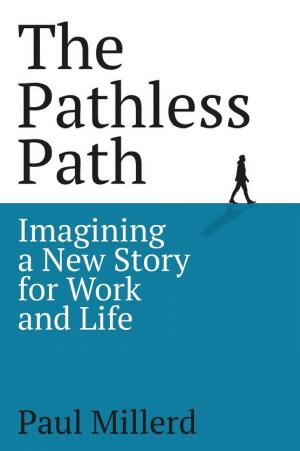

3.3.1 — Lavoro e identità
Paul Millerd aveva un lavoro da consulente strategico, uno stipendio a sei cifre e un piano di carriera blindato. Poi si è fermato. In The Pathless Path, racconta la sua uscita dal paradigma lavoro-identità-status: la scoperta che il burnout non è un problema individuale, ma sistemico. Il “default path” — scuola, università, carriera, pensione — funzionava quando il mondo era stabile. In un mondo che cambia ogni 18 mesi, il percorso lineare è una trappola (💥 ff.62.1 Il cambio di paradigma). Millerd introduce il concetto di “misery tax”: il costo nascosto di un lavoro che non ami, misurato in pranzi costosi per compensare la frustrazione, vacanze lussuose per sopravvivere all'anno, spese sanitarie per lo stress accumulato (💰 ff.62.3 La tassa sulla miseria). La complessità nascosta del mondo che ci circonda rende il problema ancora più acuto. Tim Urban di Wait But Why[1] lo spiega con un esempio geniale: nessun essere umano sa costruire una penna Bic. Servono l’estrazione dei materiali, la forgiatura, la chimica della plastica e dell’inchiostro, la progettazione — e per estrarre serve una pala, che va costruita, e per la chimica serve il vetro e il fuoco. Una cascata infinita di prerequisiti. Elon Musk stima che servano almeno un milione di persone per garantire la complessità della civiltà che ci circonda. Un artista ha provato a costruire un tostapane da zero[2]: il risultato è comicamente imperfetto, ma il punto è serio — dipendiamo da una rete di competenze che nessun individuo possiede per intero (🔧 ff.21.1 La magia dell’insalata a domicilio e della Bic). La piramide di Maslow va riletta: una volta soddisfatti i bisogni di base, non è lo status che cerchiamo ma l'autonomia. “Il lavoro non è il contrario della libertà. Il lavoro senza scelta lo è.” Sempre più giovani abbracciano la “strategia a bilanciere”: lavori manuali oppure all-in digitale, abbandonando il percorso universitario tradizionale (💎 ff.62.4 Maslow nel 2024).
Zipline ha registrato un dato strano, eppure meraviglioso: la malnutrizione infantile grave in Ruanda è calata dell'89% grazie alle consegne con droni [42]. I droni nascevano per sangue e vaccini d'emergenza; il caso d'uso ha derivato verso la nutrizione infantile perché Plumpy'Nut — la pasta proteica che salva bambini denutriti — pesa 92 grammi a porzione, esattamente nel range di payload ottimale. Quando un dato che cala è la notizia migliore, il progresso misurato dalla distanza tra ciò che speravamo e ciò che otteniamo diventa tangibile. In 🔟 ff.58.1 Il costo di una vita umana il quadro era quello delle 3 tonnellate di CO₂ come soglia etica; nel Ruanda di Zipline, la soglia etica è il minuto di consegna. Il futuro non è l'AI agentica di San Francisco: è anche un drone sopra una collina.
Nassim Nicholas Taleb la chiamerebbe strategia del bilanciere: sicurezza assoluta da un lato, rischio totale dall’altro, niente nel mezzo. Applicata ai giovani, la formula si traduce in una scelta binaria — o rinunciano all’università per i mestieri manuali, o scommettono tutto su imprese digitali ad altissimo rischio. La via di mezzo — il posto fisso, la carriera lineare, il mutuo trentennale — si svuota di significato quando l’orizzonte cambia ogni diciotto mesi. Se un’intera generazione vive sul bilanciere di Taleb, la classe media rischia di diventare un concetto del secolo scorso.
Paul Millerd aveva uno stipendio a sei cifre e un piano di carriera blindato. Poi si è fermato. Il “default path” — scuola, università, carriera, pensione — funzionava quando il mondo era stabile. In un mondo che cambia ogni 18 mesi, il percorso lineare è una trappola.

Il bilanciere di Taleb non è solo una strategia individuale: è il riflesso di un’economia globale che ha smesso di crescere in modo lineare. La percentuale di GDP globale legata al commercio è in declino dal 2008 — il picco è stato raggiunto quell’anno, e in un decennio quel numero ha smesso di crescere, tornando a valori del 2000. Sembra la fine della globalizzazione. Ma forse è il numero sbagliato: ci sono stati trend paralleli che hanno ridotto il commercio “fisico” senza ridurre le connessioni. La digitalizzazione ha smaterializzato interi settori: un film non viaggia più su una nave container, viaggia su un cavo sottomarino. La crescita del settore terziario — i servizi — ha spostato il baricentro dell’economia verso l’intangibile. La competitività dei robot nel lavoro ha abbassato la differenza di costo tra produrre in Asia e produrre in Europa. Il 3D-printing promette ulteriore localizzazione della produzione. Se la globalizzazione del Novecento era fatta di navi e container, quella del Ventunesimo secolo è fatta di dati e algoritmi. La nave Evergreen bloccata nel canale di Suez non è stata solo una crisi logistica: è stata la metafora perfetta di un sistema fisico fragile che il digitale sta rendendo obsoleto. Chi confonde il calo del commercio fisico con il calo delle connessioni commette lo stesso errore di chi giudicava Internet dal numero di lettere inviate per posta (🚢 ff.21.2 La fine di un’era?).
Ma c’è un capitolo della piramide che quasi nessuno conosce, perché Maslow lo scrisse troppo tardi. Negli ultimi anni di vita, lo psicologo rivisitò la propria teoria aggiungendo un livello sopra l’autorealizzazione: la trascendenza del sé, la self-transcendence. Greg McKeown, autore di Essentialism, lo racconta a Tim Ferris con un dettaglio che spiazza entrambi: Maslow arrivò alla conclusione che il picco del benessere umano non sta nel realizzare se stessi, ma nel superarsi[4] — contribuire a qualcosa che trascende i propri bisogni, i propri successi, persino la propria identità. La differenza è sottile e dirompente: l’autorealizzazione è ancora centrata sull’io; la trascendenza lo dissolve. Un genitore che insegna al figlio qualcosa di cui non vedrà i frutti; un ricercatore che deposita dati sapendo che saranno utili tra vent’anni; un costruttore di cattedrali che non vivrà abbastanza per vederle finite. La piramide, rivista così, non è più una scala da salire ma un trampolino da cui lanciarsi (🔮 ff.89.2 Piramide di Maslow 2.0).
Questa revisione postuma illumina anche il paradosso del “lavoro significativo” nell’era degli algoritmi. Se l’autorealizzazione è il tetto della piramide tradizionale, allora ogni lavoro è un veicolo di status e gratificazione personale — e quando l’AI replica quel lavoro, la crisi è identitaria. Ma se il vertice è la trascendenza, il senso non dipende dall’unicità del contributo: dipende dalla direzione. Un insegnante non diventa meno utile perché ChatGPT può rispondere alle stesse domande; diventa più necessario perché la macchina non sa indicare perché valga la pena imparare. In una piramide riscritta con la trascendenza in cima, l’automazione non erode il senso ma lo distilla: tutto ciò che l’AI sa fare non è mai stato il punto. Il punto è ciò che facciamo per chi viene dopo — e su questo nessun modello linguistico ha nulla da insegnare (✊ ff.55.1 Come ci si sente, dentro una rivoluzione?).
Bill Perkins, ingegnere prestato alla compravendita del gas, ha costruito un’intera filosofia su un paradosso fiscale: morire con 10.000 euro in banca significa aver lavorato tre mesi per niente — tre mesi convertibili in cinque viaggi, cinquanta cene o tre anni di pensione in più. Il suo libro Die with Zero introduce la nozione di “ricordi come dividendi”: un viaggio in Italia a 20 anni genera vent’anni di memoria, conoscenze e relazioni; lo stesso investimento a 40 anni produce meno della metà. C’è anche l’“inflazione fisica”: a 60 anni, sugli sci, facciamo meno discese. Perkins tira la conclusione scomoda: le eredità che i figli ricevono a 60 anni, quando sono già economicamente stabili, avrebbero prodotto dieci volte più valore se donate tra i 25 e i 35 anni, quando possono servire per casa, impresa o più esperienze (📉 ff.111.2 Una vita spericolata) (📈 ff.111.4 Esperienze = investimenti).
L'ansia da AI non nasce dalla sostituzione, ma dalla misurazione continua senza senso del contributo. Il ritmo digitale comprime le attese e trasforma la giornata in micro-scelte sotto pressione (⏳ ff.44.2 L'infinitudine là fuori) (✅ ff.44.1 La fallacia del tempo a contenitori). La risposta è design del lavoro: autonomia reale, routine minime per abbassare il rumore decisionale, e ridefinizione del valore umano su giudizio e relazioni invece che volume (🥋 ff.62.2 Uscire dalla via maestra) (🪣 ff.108.1 Quale è il vostro Perfect Day?).
Il tempo perduto nel tragitto casa-lavoro è una costante antropologica più resistente di qualsiasi rivoluzione tecnologica. Nel 1994 il fisico italiano Cesare Marchetti osservò che sin dall’antica Roma la durata massima sopportabile di un viaggio pendolare è di circa un’ora — mezz’ora per tratta. Se il tragitto supera questa soglia, le persone cambiano lavoro o si trasferiscono. Negli Stati Uniti la media è persino superiore: un’ora piena, pari a un anno e due mesi di vita seduti in automobile. Chi passa almeno trenta minuti al giorno nel traffico avrebbe potuto guardare Squid Game quindici volte, o ottanta film, solo nell’arco di un anno. In duemila anni di storia, il muro di Marchetti non è mai stato abbattuto (🧱 ff.5.5 Il muro di Marchetti).
E c’è una risposta al burnout che arriva dalla creatività stessa. Secondo il Wall Street Journal i lavoratori sono oggi più felici che in passato — forse perché freelance e lavori occasionali sono cresciuti dal 10 al 15% della forza lavoro. Ma la flessibilità da sola non produce senso. Il saggista Henry Miller propone un’alternativa che attraversa i decenni: trovare un’attività piacevole da fare indipendentemente da tutto. Per lui era la scrittura. Non è diventato il prossimo JK Rowling, ma ha costruito appartenenza, stima, autorealizzazione — i tre gradini alti della piramide di Maslow. Il burnout non si cura con meno ore, si cura con più senso. In un mondo dove la “misery tax” di Millerd (💰 ff.62.3 La tassa sulla miseria) si paga in pranzi e vacanze, l’antidoto è una pratica gratuita che si farebbe comunque. Per molti, futuro fortissimo è esattamente questo: scrittura come investimento in sé stessi (🧩 ff.62.5 Indipendenza e curiosità).
Il lockdown ha fatto saltare il muro di Marchetti, almeno temporaneamente: niente pendolarismo, niente ufficio, e un surplus di tempo che ha cercato uno sbocco. La diffusione degli hobby, iniziata nel lontano Ottocento con il miglioramento della vita portato dalla rivoluzione industriale, ha avuto un’accelerazione brutale. 1 americano su 2 ha iniziato un nuovo hobby durante il lockdown — e si è indebitato per esso. Ceramica, fermentazione, maglieria, elettronica: il catalogo degli hobby è la storia stessa della civiltà umana letta attraverso le sue distrazioni. Il paradosso è che la reclusione forzata ha prodotto più autonomia creativa della libertà quotidiana: quando togli il pendolarismo, l’identità migra dal lavoro alle passioni (🧗♂️ ff.76.2 L’esplosione degli hobby).
Il rumore decisionale, però, non è solo un problema di produttività: è un problema esistenziale. Decidere condivide la radice etimologica con uccidere e recidere: tagliare, rimuovere possibilità. Ogni impegno, ogni legame, ogni commitment è un’esclusione di opportunità alternative, e questa esclusione ci terrorizza. Søren Kierkegaard lo scriveva già nel 1843: “La libertà di scelta non rappresenta la grandezza dell’uomo, ma il suo permanente dramma. Egli si trova sempre di fronte all’alternativa di una possibilità che sí e di una possibilità che no senza possedere alcun criterio di scelta.” Il 1843 è distante da noi quanto lo sarà il 2201: qualcuno, nel 2201, si ricorderà delle nostre ansie digitali? Kierkegaard, parente intellettuale stretto di Heidegger, descriveva un’umanità che brancola nel buio dell’indecisione, incapace di orientare la propria vita in un senso o nell’altro. Centottant’anni dopo, Tinder ha trasformato quel buio in un feed infinito di volti: l’illusione della scelta perfetta paralizza più della mancanza di scelta. La differenza è che Kierkegaard, donnaiolo mai placato, non aveva un algoritmo a suggerirgli la prossima conquista. Altrimenti, chissà quanti libri in più avrebbe scritto. O forse nessuno: perché la noia e l’angoscia della scelta, come insegnava lui stesso nell’Aut-Aut, sono il combustibile della filosofia. Togli il dramma e togli il pensiero (🏠 ff.44.3 Stabilirsi stabilizza).